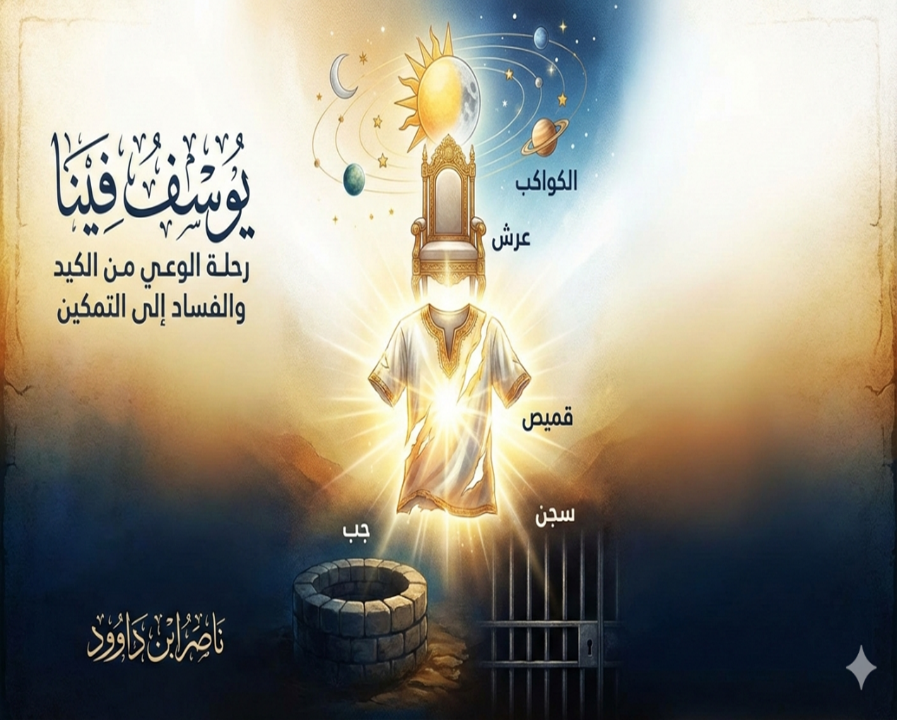

لمن هذا الكتاب؟
- الباحثون عن الوعي القرآني والمنهج النسقي
- المهتمون بتفسير سورة يوسف برؤية رمزية معاصرة
- المفكرون في قضايا الفساد والسلطة والإصلاح
- طلاب التزكية والتربية الروحية
- كل من يريد أن يرى يوسف في داخله
مقدمة الكتاب: يوسف فينا
رحلة الوعي من مخاض الكيد إلى تمكين الذات والواقع
الحمد لله الذي أنزل القرآن روحاً تحيا بها القلوب... يوسف فينا. هذه ليست مجرد جملة استهلالية، بل هي "عقيدة تدبرية" ننطلق منها في هذا الكتاب. إن يوسف بن يعقوب عليهما السلام ليس شخصية احتجزها الماضي، بل هو "أنت" في أبهى تجليات نقائك. هو الجوهر الفطري، الضمير اليقظ، الرؤيا الصادقة التي يحملها كل منا في أعماقه.
هذا الكتاب ينتشل السورة من ضيق التفسير المادي الفردي إلى سعة المنظومة القرآنية الشاملة. السورة تكرر كلمة "الكيد" تسع مرات لترسم ملامح "الدولة العميقة" للفساد الإداري والمالي. نعيد اكتشاف الرموز: القميص يتحول من دليل إدانة مزيف إلى بشير شفاء، البكاء قد يكون دموع تمساح أو دموع توبة، السجن ليس قضباناً بل مدرسة الخلوة التي تعد للتمكين.
نربط بين يوسف والكهف: إذا كانت الكهف حصننا من الفتن الأربع، فإن يوسف هو التطبيق العملي للنجاة منها بسلاح الإحسان. دعوة للتحرر من "الغفلة الأبائية" وسقاية العقول بخمر النصوص الجامدة، نحو تأويل الأحاديث (Data Update) لفهم ما استجد في نفوسنا وواقعنا.
يوسف فينا.. لأن القرآن حي فينا.
هيكل الرحلة: مراحل الوعي الخمس
١. الرؤيا (تلقي المعنى)
ليلة القدر الفردية، لحظة اليقظة والنداء.
٢. الجب (قمع الإمكانات)
الرفض الاجتماعي، حسد الأقربين، بداية التصفية.
٣. القصر والفتنة
مواجهة إغراء السلطة والشهوة، الامتحان الأخلاقي.
٤. السجن (العزلة الاستراتيجية)
الاعتزال الاختياري، مختبر النمو الداخلي وتأويل الأحلام.
٥. التمكين (السلطة المسؤولة)
إدارة الأزمة، العفو عند المقدرة، الإصلاح بلا انتقام.
أبرز المحاور
الكيد المنظومي
فساد إداري ومالي، شبكات المصالح، الدولة العميقة.
الرمزية السياسية
مراكز القوى، شهوة السلطة، تهديد بقاء الحضارات.
الوعي والنسيان
الصلاة على النبي ثورة وجودية تقطع دابر الانفصال.
الإحسان سلاحاً
الخروج من الفتن الأربع كما في سورة الكهف.
القميص والعرش
من دليل الإدانة إلى بشير الشفاء إلى راية التمكين.
خاتمة الكتاب
انتهت صفحات هذا الكتاب، لكن الرحلة الحقيقية تبدأ الآن في عمق وعيك، في يومياتك، في مواجهاتك اليومية مع الكيد والفساد، وفي سعيك نحو التمكين الحقيقي. يوسف فينا ليس مجرد عنوان، بل دعوة لاستدعاء ذلك الجوهر النقي الذي يواجه الجب، يحتمل السجن، وينهض عزيزاً محسناً. كشفنا أن سورة يوسف – أحسن القصص – ليست سيرة تاريخية جامدة، بل نموذج حي يتجدد في كل عصر. الغاية الأعمى: استرداد ميثاق "الوصل" مع الأنبياء، ورفض تشويه سمعتهم في المرويات المغرضة. "الصلاة على النبي ﷺ" ليست تمتمة طقسية، بل ثورة وجودية تربطنا بمنبع الإمداد الإلهي، وتحمينا من متاهات النسيان.